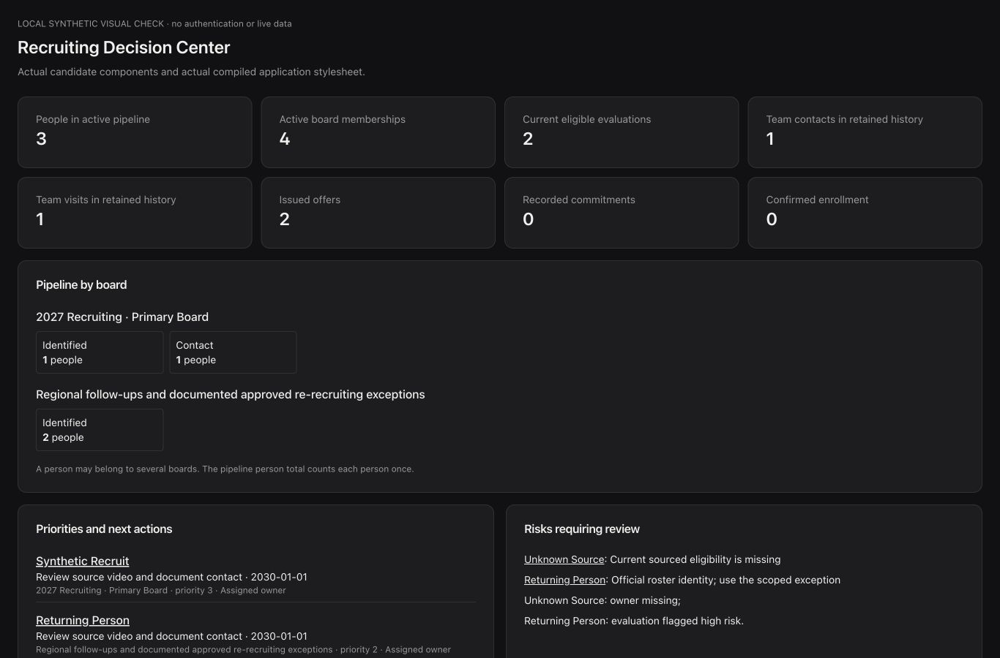

01 / Recruiting operations
SelfScout College
Manual player profiles, 1–5 category stars, staff boards, depth charts, and scholarship planning in one recruiting workspace.
Evidence: current local candidate and synthetic review screenshots; hosted behavior is not established by these images.
Explore the image gallery ↗